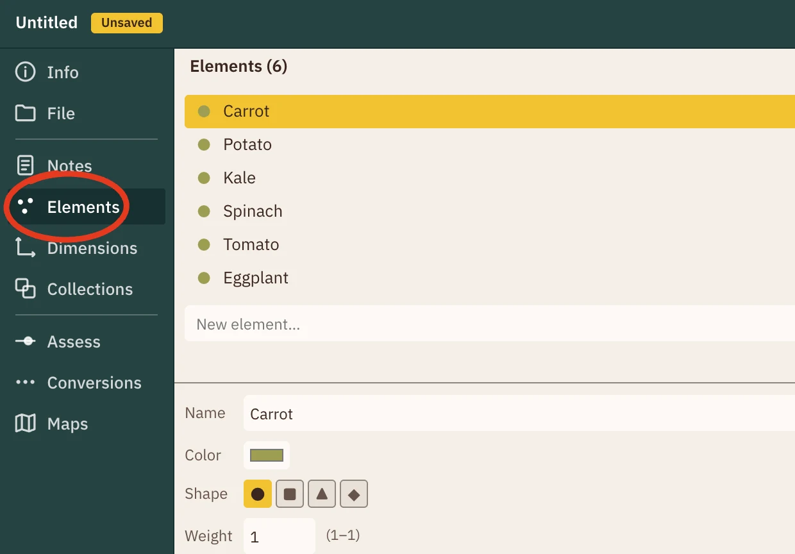
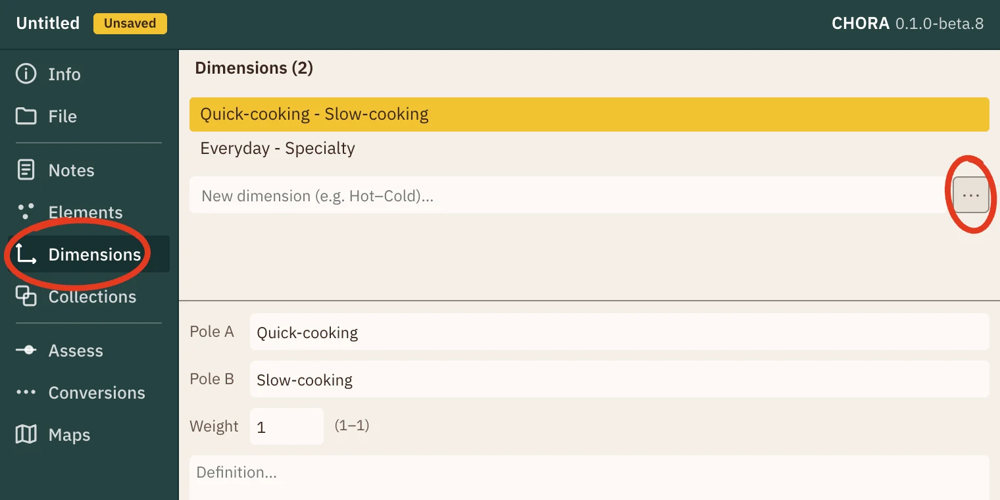
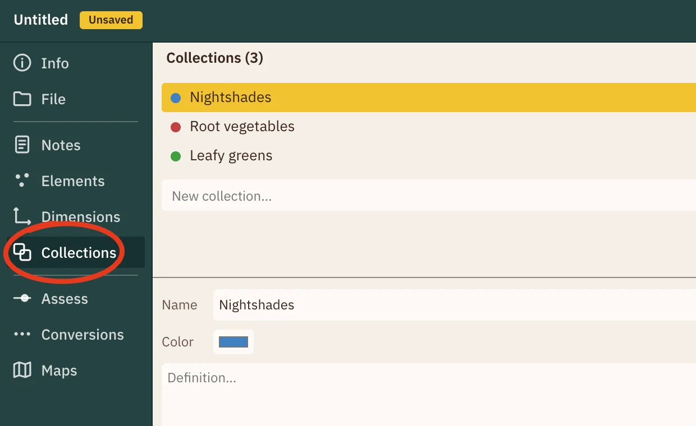
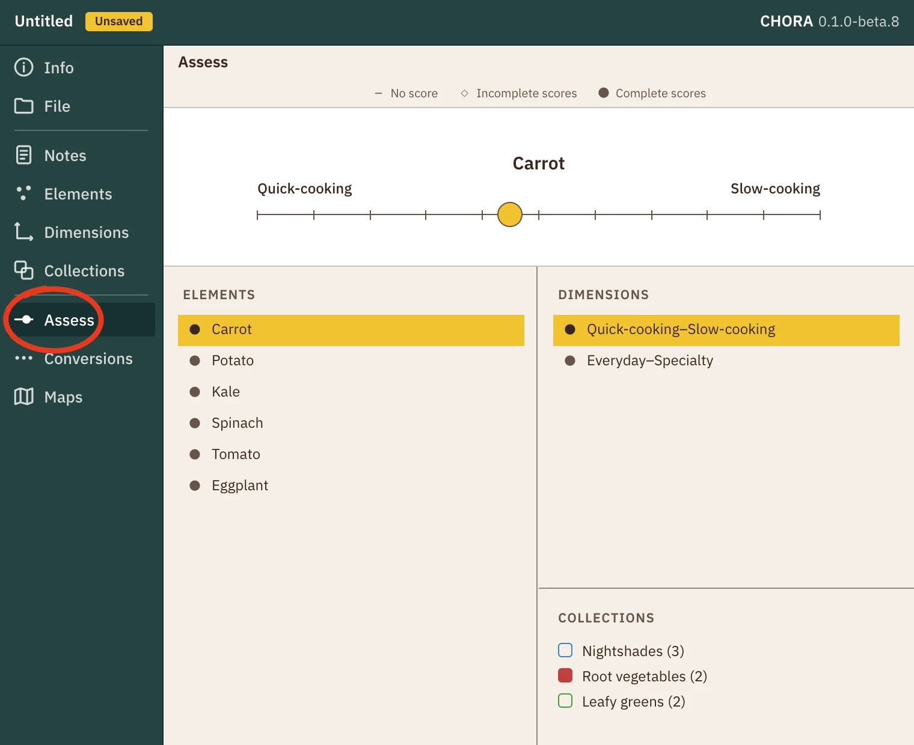
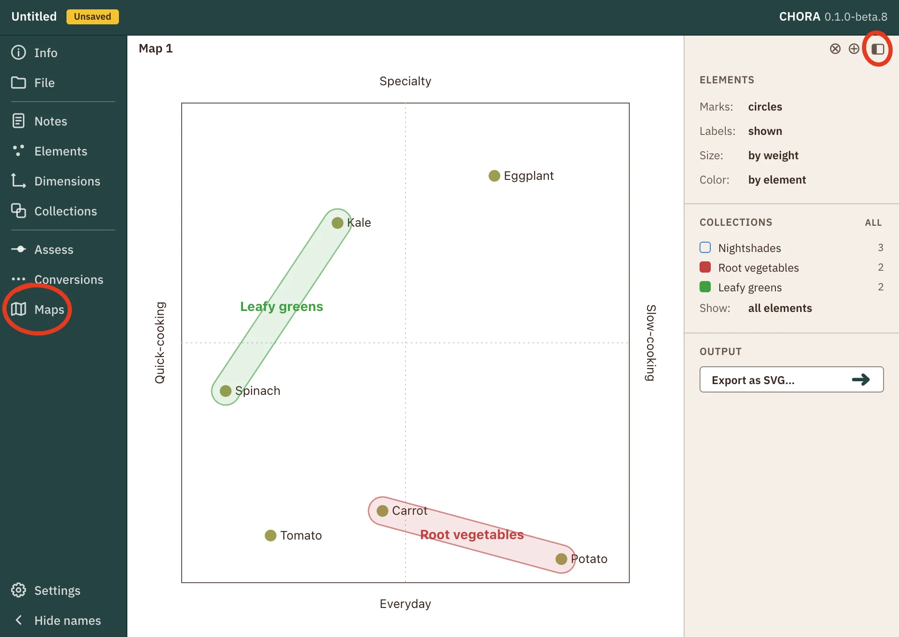

CHORA \ˈkȯr-ə\
Quick Start Guide
-
1. Start with a list
Enter a list of the items you want to sort out. In the app, items are called elements.
You can skip the details for now, or add anything that helps you define each item.

-
2. Choose how to compare them
Enter at least two qualities. Each quality is a scale between two opposite ends, such as Simple–Complex or Quiet–Lively. In the app, these scales are called dimensions.
Need ideas? Click the ⋯ button beside the entry field to browse starter lists.

-
Optional: Add some collections
If you already have groups in mind for these items, enter them here as collections. You can also wait and add them later. Not required.

-
3. Record the comparisons
Go through the items one by one. For each item, use the sliders to place it between the ends of each quality.
If you like, put it in one or more collections as you go.

-
4. Look at some maps
When you are done scoring, explore how the items compare by drawing maps from the Maps menu. Each map has a sidebar on the right for adjusting that map's view.
- Drag an item on the map to reposition it. Its scores update everywhere.
- Right-click an item to change its details.
- Shift-drag across empty space to select several items; shift-click adds or removes one. Then right-click the selection to add them all to an existing or new collection.

Other parts
The buttons down the left side of Chora, from top to bottom.
- Info
- The start page, the example study, this guide, feedback, and About Chora.
- File
- Start, open and save studies as files on your computer. Import or export a spreadsheet.
- Notes
- What the study is for, and a running log of what you decide and why.
- Elements
- The items you are comparing.
- Dimensions
- The qualities you compare them on, each a scale between two ends.
- Collections
- Named groups of items. An item can belong to more than one.
- Assess
- Place each item on each quality, and choose its collections.
- Conversions
- Let one scale drive another, such as a quality setting an item's size or color.
- Maps
- Draw Cartesian and semantic maps. Close one any time; nothing is lost.
- Settings
- Defaults for new maps and items, label sizes, and delete confirmations.
- Show names
- Shows or hides these names beside the icons.